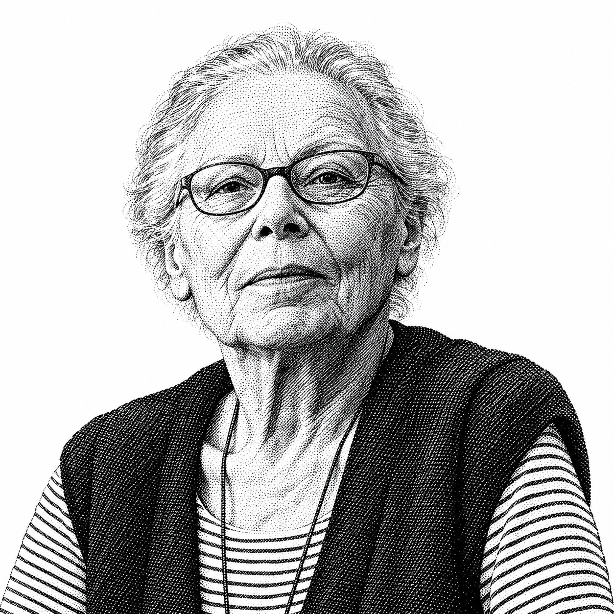
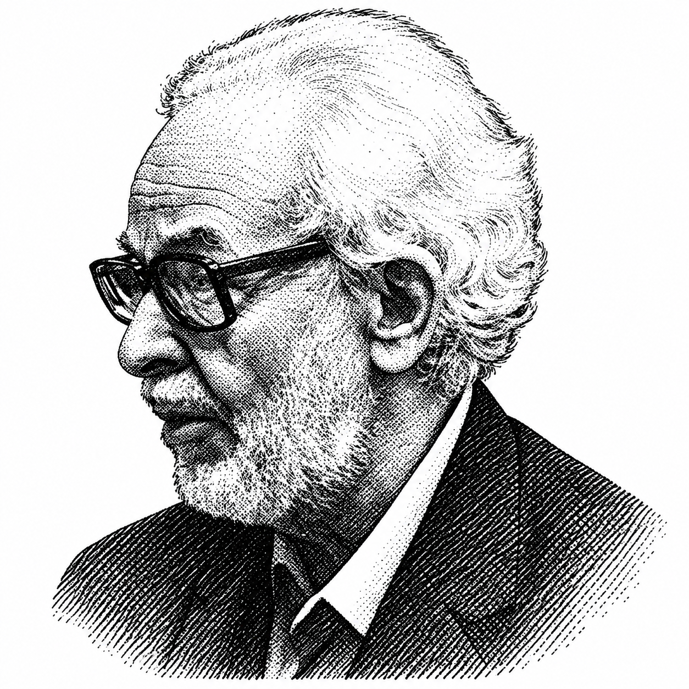

← The Vibes Are People
The Vibes Are People / field test 01 / 27 September 2026
AI motion
field notes.
Experimental, non-validated research
An exploratory collection of AI marketing and waiting animations. The interpretations and connections to artists are tentative, uneven, and not validated. They are prompts for investigation, not established provenance or confirmed influence.
Seven moving samples from AI developer marketing, read through the visual vocabulary of people and techniques.
Play the clips at their original pace. Each has native pause, seek and fullscreen controls. Portraits identify vocabulary references, not the makers of these campaigns.
Motion evidence → human reference → prompt
OpenAI DevDay · rearrangement as rhythm

Vera Molnár
Vocabulary referenceMolnár / interrupted order
Squares expand and contract, nested frames change scale, and repeated word blocks slide between alignments. The small panels run variations of the same modular vocabulary. The rhythm comes from regularity repeatedly being disturbed and restored.
The useful comparison is controlled variation inside a rule-bound composition. Molnár is a vocabulary reference here, not an attribution or a claim that she influenced this identity. John Whitney’s visual-music framing is another promising comparison for a future timing study.
Animate a fixed grid of square modules. Alternate clean alignment with selected omissions, stepped translations and expanding nested squares. Offset the cycles across neighboring panels; preserve a readable underlying order. Use Molnár’s interrupted order as a conceptual reference, with explicit timing rules rather than random jitter.
Capture evidence and sources
Play Studio documents creating the 2023 identity with OpenAI and lists its project team. This capture is the MotionLaydown video on that case study. 16-second screen recording; approximately 14 sampled frames/second, exported at 15 fps with recorded timing. The excerpt restarts at the end; it is not a seamless source loop.
Portrait reused unchanged from the existing Vibes project. Portrait identity/source record. Research commentary; original portrait source linked above.
Motion evidence → human reference → prompt
Code with Claude · a stable word, an unstable surface
Vera Molnár
Vocabulary referenceMolnár / controlled variation
The SAN FRANCISCO letter silhouette remains legible while the small star-and-line marks change across its grid. The captured motion reads as local variation within a stable typographic mask, rather than the entire word translating across the page.
The match is a teaching analogy: a fixed system with controlled departures. The capture supports changing marks, but does not establish the exact algorithm, randomness model, interaction rules or a historical influence.
Build a readable word from a grid of tiny radial and diagonal marks. Hold the letter mask fixed. Change each mark’s orientation or state in staggered waves, with brief rests between changes. Keep local variation subordinate to legibility. Think Molnár / controlled variation; specify the actual state rules.
Capture evidence and sources
10-second screen recording of the official 2026 San Francisco event page, approximately 15 sampled frames/second. No pointer interaction was intentionally applied during this capture. The author and internal algorithm have not been established. The excerpt restarts at the end.
Portrait reused unchanged from the existing Vibes project. Portrait identity/source record. Research commentary; original portrait source linked above.
Motion evidence → human reference → prompt
Gemini · breathing light
Zach Lieberman
Vocabulary referenceLieberman / expressive contour — exploratory comparison
As you put it: it is breathing. Blue illumination slowly swells and recedes around a dark, curved star-like silhouette. Across the captured source, the large shape stays comparatively stable while its edge glow and surrounding light drift. This is subtle motion, not evidence of particles or a fluid simulation.
The existing Vibes vocabulary offers expressive contour and deformation as a way to develop a new study. This is a particularly tentative match: the observed clip is more about light modulation than obvious elastic deformation. A shader technique description is more defensible than naming a specific underlying algorithm.
Keep a dark four-point curved silhouette nearly fixed. Move a soft electric-blue light field slowly along its edges, gently varying bloom and gradient width. Use smooth periodic modulation, no abrupt cuts, and a quiet background. Explore expressive contours as a separate variation; do not turn the source into fast particle motion.
Capture evidence and sources
Original WebM obtained from the video element of the official Gemini page, plus MP4 and GIF derivatives. Full source duration is retained; the GIF samples at 15 fps. The maker and rendering method have not been established.
Portrait reused unchanged from the existing Vibes project. Portrait identity/source record. Research commentary; original portrait source linked above.
Earlier comparison, brought forward
Yes, Anthropic has that skill.
Its current algorithmic-art skill explicitly calls for p5.js, seeded randomness, noise fields, particles, flows and temporal evolution. The primary source was fetched again for this study.
The earlier survey compared two agent skills and three creative-coding tools. It did not rank every skill, and it did not run a controlled contest of generated artwork.
| Earlier finding | How these captures extend it |
|---|
| Pardesco: strongest workflow fit in that survey | Test its animation, inspection and export workflow against real motion references. |
| Anthropic: the p5.js alternative | Test whether it can express breathing, phase changes and live procedural fields with precise timing. |
| p5.js: broad animation library | A possible runtime, not a competing agent skill. |
| canvas-sketch: production/export tooling | A possible route for repeatable frame sequences. |
| vsketch: plotter-oriented workflow | Less directly suited to this motion-first branch. |
Read the earlier comparison snapshot · Read the added motion benchmark brief
No new skill-generation scores are claimed. These are captured references and editorial test cases, not outputs generated by the candidate skills.
Motion evidence → human reference → prompt
DeepSeek · atmospheric flow + performed typing
Ken Perlin
Vocabulary referencePerlin / coherent variation — method family
The blue-grey background slowly folds and drifts while the headline types, erases and replaces itself. These are two different tempos: an ambient field and a foreground performance of work.
Strongest implementation evidence in this collection: the delivered JavaScript contains a WebGL2 renderer, 3D simplex-style noise, time uniforms and a continuous animation loop. Its component exposes distortion and swirl parameters. This is code evidence for procedural animation, not merely a resemblance to a shader. It does not identify who wrote this particular implementation.
Move a restrained blue-grey field with smooth time-varying noise and broad domain distortion. Keep its motion slow enough to sit behind readable text. Give headline typing a separate cadence: type, hold, erase, pause. Use Perlin / coherent variation as the method-family vocabulary; name the exact noise implementation separately.
Evidence and capture notes
12-second screen capture of the API marketing page; captured frames retain wall-clock timing. Source evidence: DeepSeek chunk 4097-1b51b1ad13616f56.js, accessed 27 September 2026. Page bundle lists chunk 4097 as a dependency; its renderer uses WebGL2, updates u_time and draws every frame subject to a 30fps throttle. This was static source inspection, not a debugger trace.
Portrait sourceMotion evidence → human reference → prompt
DeepMind Institute · a diagram quietly thinking

John Whitney
Vocabulary referenceWhitney / coordinated geometric motion
Fine circular and curved construction lines surround blue rectangular modules. Across the short loop, modules shift and change proportions while the diagram stays organized around its center. It reads as a diagram being continually recomputed.
Whitney offers useful vocabulary for related motions and visual rhythm. This is a proposed comparison; the served WebM establishes moving geometry, not the source algorithm or historical influence.
Build a spare geometric diagram from thin orbit-like curves and pale rectangular modules. Animate a few positions and proportions with coordinated periodic functions. Use small phase offsets, restrained motion and no camera cuts. Reference Whitney / visual music while keeping the actual rules explicit.
Evidence and capture notes
Original short WebM served by the DeepMind homepage’s Institute card, retained locally with MP4 and GIF derivatives. Video filename includes constant_motion. A moving video is not proof of a live procedural implementation.
Portrait sourceMotion evidence → human reference → prompt
Grok · a voice orb and the theater of waiting
John Whitney
Vocabulary referenceWhitney / phase and recurrence — exploratory comparison
The Voice card contains a luminous sphere with moving highlights and specks. Above it, the Bot and Build cards cycle through messages, thinking dots, tool activity and results. The orb suggests continuous presence; the dots and text suggest work progressing.
The page exposes a canvas at the orb’s position, supporting live rendered graphics. The exact sphere and particle algorithm was not established. The upper cards are marketing demonstrations of waiting states, not recordings of an actual inference session. Whitney is a motion-design reference, not a detected maker.
Make a quiet spherical field with slowly circulating specks and soft moving highlights. For waiting states, give three dots staggered pulses with clear rests; keep this distinct from actual progress percentage. Specify phase relationships and a calm base rhythm rather than generic “AI glow.”
Evidence and capture notes
12-second screen capture of official x.ai product cards. Canvas elements were observed at the Voice card and other animation positions. No actual user prompt was submitted; these are marketing animations.
Portrait sourceMotion evidence → human reference → prompt
Project Astra · a useful contrast case
Golan Levin
Vocabulary referenceLevin / gesture into response — a research direction
The captured teaser shows a phone, a person interacting with it, and changing on-screen content. This is demonstrational footage; it is not an abstract generative field.
Keep this as a contrast example rather than forcing it into algorithmic art. Gesture into response is a direction for examining the interface, but this short teaser does not establish the timing or algorithm of a particular waiting animation.
For a separate original study, map a real input signal to visible motion and distinguish listening, waiting and responding states. Show an idle rhythm without falsely implying a measurable completion percentage. Capture the transitions before drawing conclusions about the interface.
Evidence and capture notes
Original official Project Astra hero teaser MP4 and derivatives retained. Included to document what was found; not counted as confirmed algorithmic art.
Portrait source